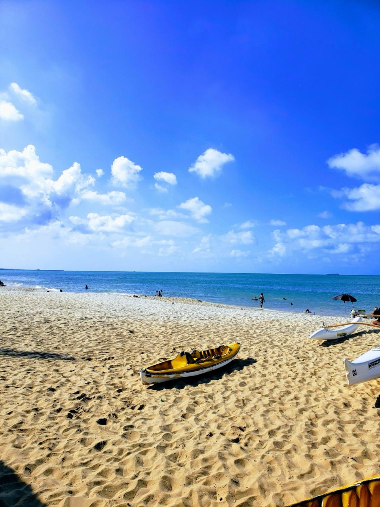
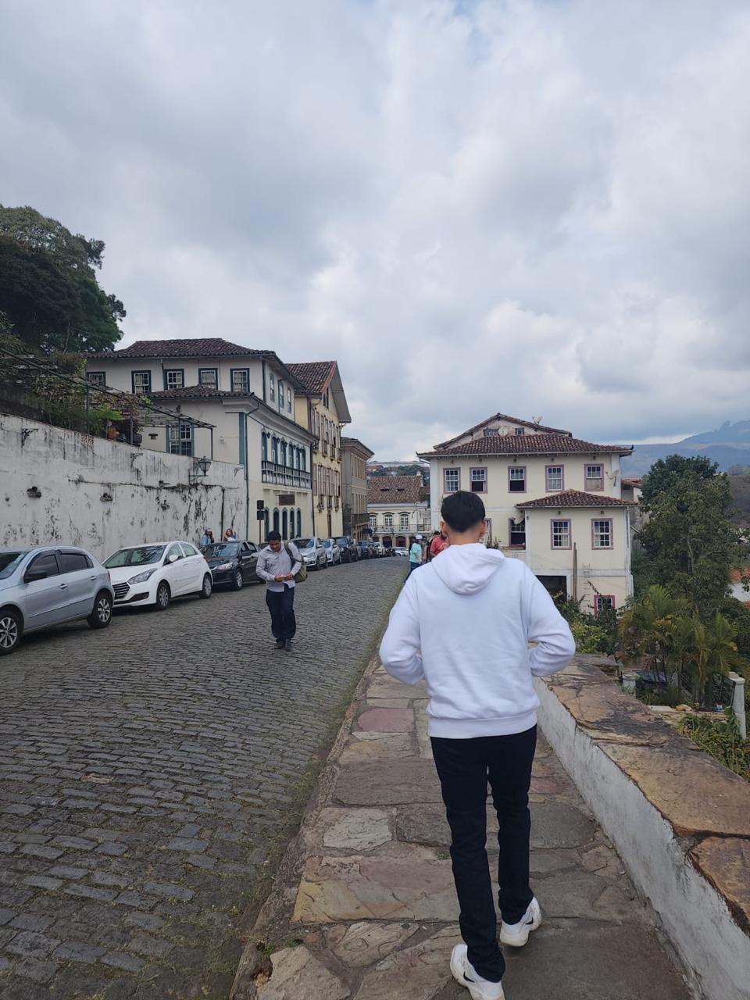
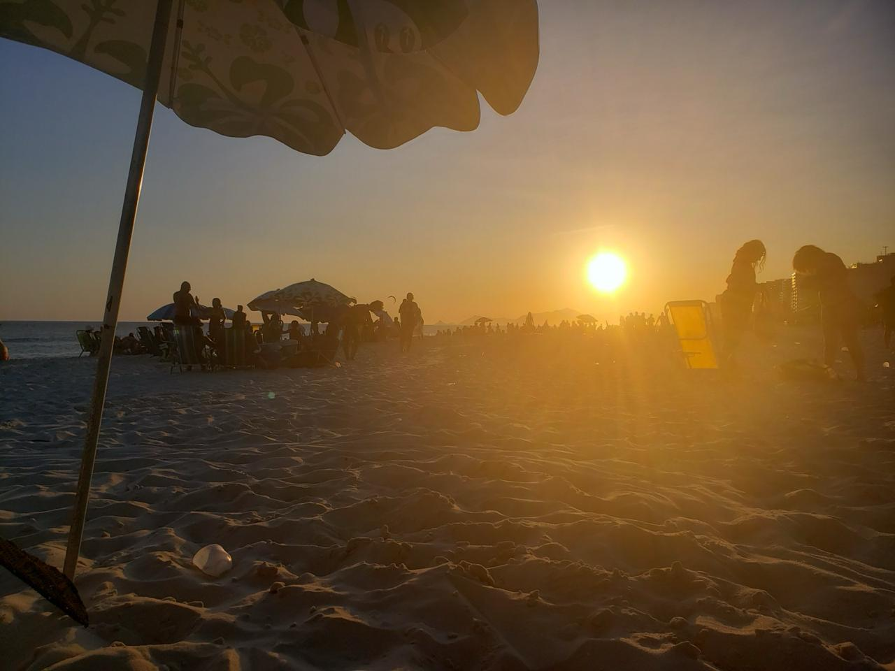

Fortaleza, Ceará.
Janeiro de 2023
Belas praias e muito entretenimento
Localizada no Nordeste, a capital do Estado do Ceará é um belo destino turístico
para quem gosta de belas praias com bastante estrutura, além dos famosos parques aquáticos e festas
que envolvem toda a população. A cidade é conhecida por suas praias com falésias vermelhas, palmeiras,
dunas e lagoas. As tradições folclóricas da cidade podem ser vistas em apresentações de dança no Theatro
José de Alencar, construção em estilo art nouveau inaugurada em 1910. Outro destaque arquitetônico é a
Catedral Metropolitana, em estilo neogótico.

Ouro Preto, Minas Gerais.
Agosto de 2023
Cidade histórica símbolo de Minas Gerais
Destino incrível, com muita história e restaurantes temáticos, com belas
igrejas, edifícios tombados e ruas ainda do tempo do Brasil Colônia, conhecida pela arquitetura barroca, que
inclui pontes, fontes e praças, e pelas ruas calcetadas íngremes e sinuosas. A Praça central de Tiradentes
recebeu
o nome do mártir da independência brasileira. Existem várias igrejas e capelas por toda a cidade, incluindo
a Igreja
de São Francisco de Assis, do século XVIII.

Barra da Tijuca, Rio de Janeiro.
Fevereiro de 2022
A cidade maravilhosa
O maior destino turístico do país faz jus a fama pelas praias de Copacabana e Ipanema, pela
estátua de
38 metros de altura do Cristo Redentor, no topo do Corcovado, e pelo Pão de Açúcar, um pico de granito com
teleféricos
até seu cume. A cidade também é conhecida pelas grandes favelas. O empolgante Carnaval, com carros
alegóricos, fantasias
extravagantes e sambistas, é considerado o maior do mundo. !